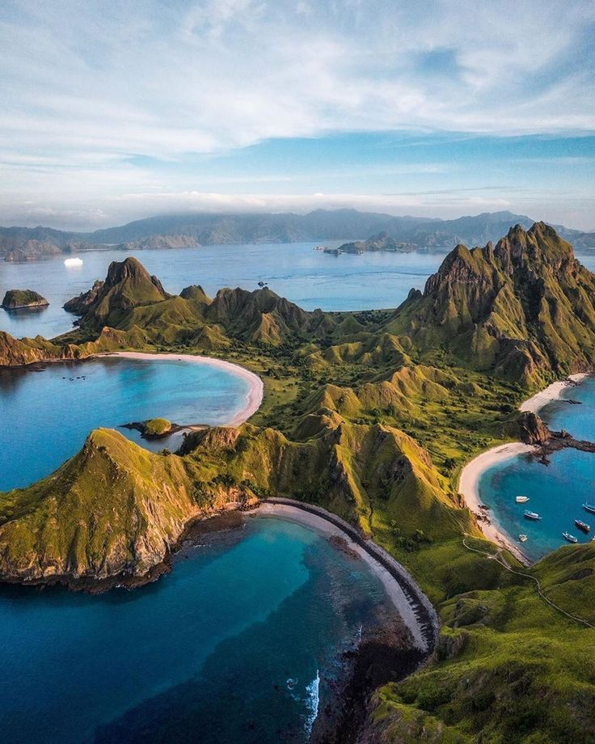

Wisata Labuan Bajo

Ada apa di Nusa Tenggara Timur? Salah satu provinsi di ujung timur Indonesia ini menyimpan berbagai tempat wisata yang sangat menarik untuk kita jelajahi, yang paling indah adalah wisata Labuan Bajo dan wisata Pulau Komodo.
Bayangkan berangkat ke Taman Nasional Komodo melalui Labuan Bajo, kemudian berlayar ke Pulau Komodo, Pulau Rinca, Pulau Padar, dan banyak pulau kecil di sekitarnya. Hanya dengan sewa Kapal Labuan Bajo agar Anda dapat jelajahi tempat wisata populer di kalangan selebritis, dan wisatawan luar serta domestik.
Jelajahi Taman Nasional Komodo dengan Sewa Kapal Labuan Bajo.
Apakah wisata ke Labuan Bajo mahal? Tentu tidak! Harga sewa perahu di Labuan Bajo dari TourSun Labuan Bajo bervariasi berdasarkan jenis kapal yang ingin Anda sewa. Anda bisa memilih berbagai jenis kapal mulai dari Yatch, Kapal Phinisi, Kapal Standart, Speed Boat, hingga memudahkan Anda pergi bersama teman, keluarga, atau kolega Anda untuk menemukan kemegahan Taman Nasional Komodo.
TourSun Labuan Bajo akan memberi saran pilihan destinasi terbaik sesuai dengan pengalaman bertahun-tahun kami menghandle trip menyusuri wisata sailing komodo dengan menyesuaikan paket tour yang anda pilih, namun semuanya pasti mencakup menjelajahi pulau-pulau yang instagramable di Labuan Bajo.